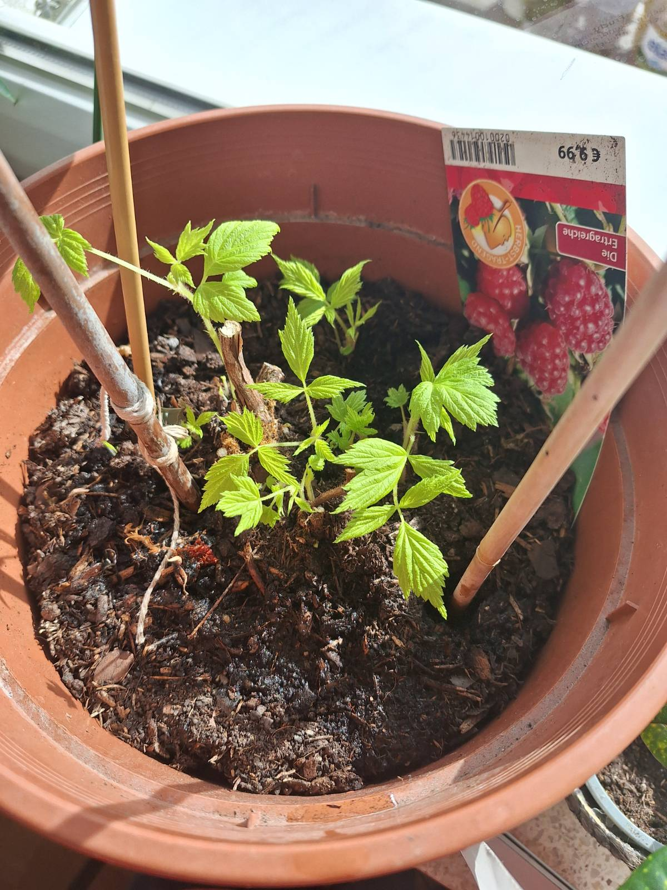
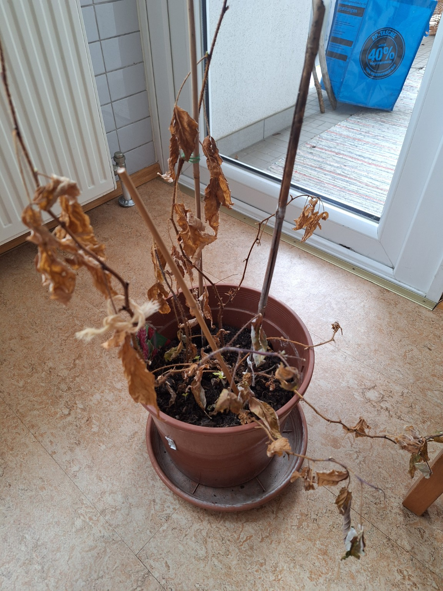
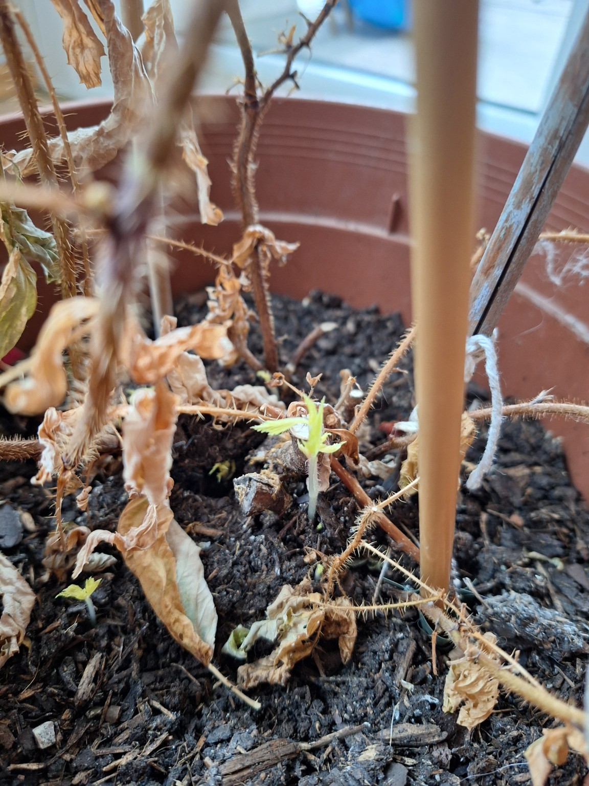

Raspberry
Raspberry — early growth, carefully slowed down
The raspberry has clearly left dormancy and is pushing fresh, healthy shoots from the base. Leaf colour is bright and compact, indicating good vitality rather than stress-driven growth. Despite the early start, conditions are still winter-like.


What I did: removed all dead, old canes; kept the plant bright and cool; avoided fertilizer; started short, daytime balcony exposure to improve light quality and harden the young growth, while bringing the pot back indoors overnight due to frost.
Next steps: continue controlled day–night acclimation until night temperatures stay above freezing. Once permanently outdoors and shoots reach 10–15 cm, begin light organic feeding. Later in spring, reduce the number of canes to a few strong shoots suited to the small container.
The focus right now is structure and resilience, not speed. Strong canes matter more than early growth.
Raspberry — still alive, visibly rebooting
The old canes look done, but the plant has started pushing fresh shoots from the base. That’s the real health indicator: it’s investing energy where it matters.


What I did: removed fully dead, dry canes close to the soil line; kept watering conservative and consistent; no feeding yet; kept it bright but avoided “forcing” it with warmth.
Next steps: wait until the new shoots turn a deeper green and gain height. Once growth is stable (ideally after moving it outdoors for real light and airflow), start a mild, organic feed. Later in spring, reduce excess shoots so a few strong canes get all the energy.
Rule of thumb right now: lightly moist soil, no swamp, no fertilizer.